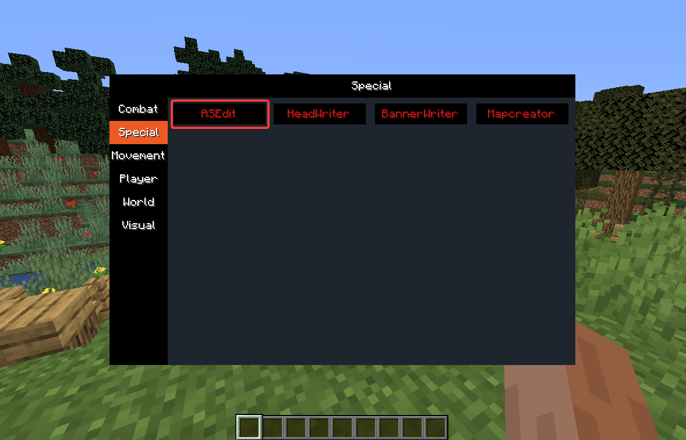
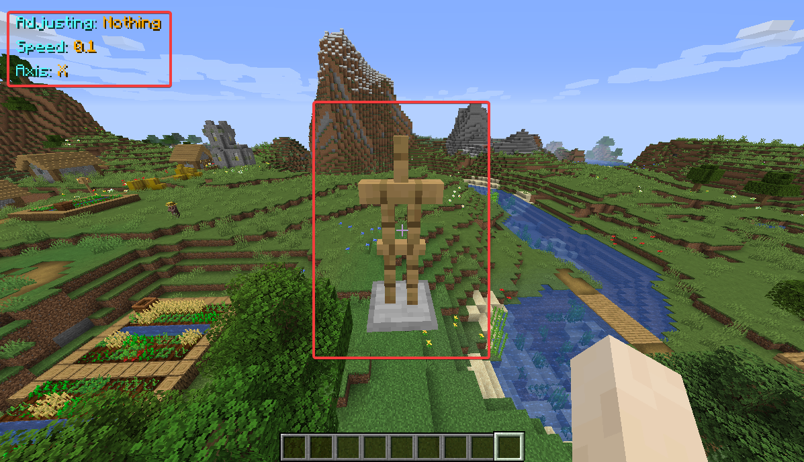
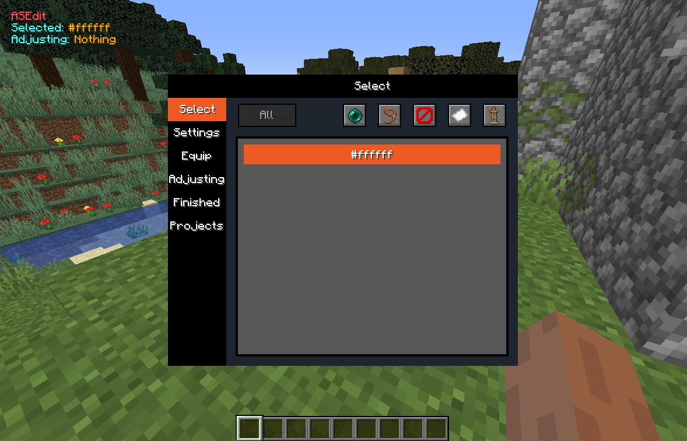
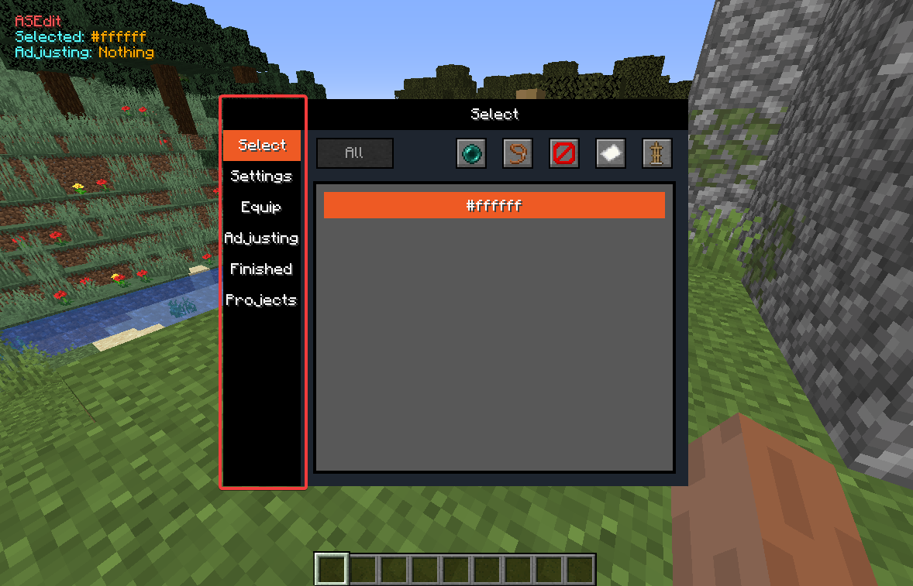
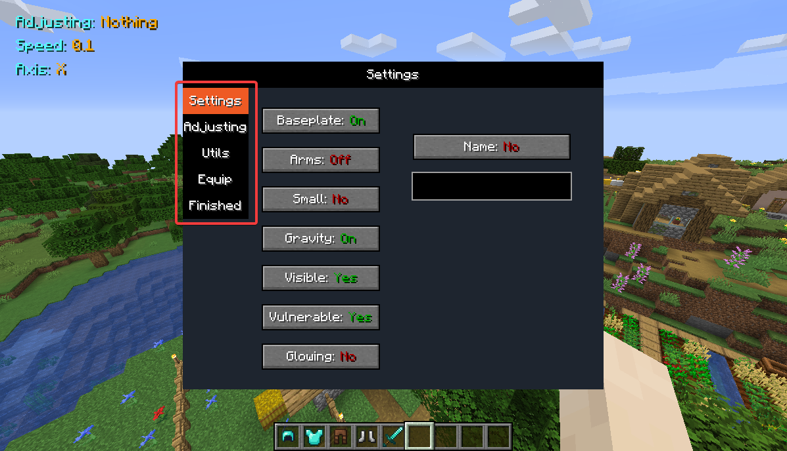
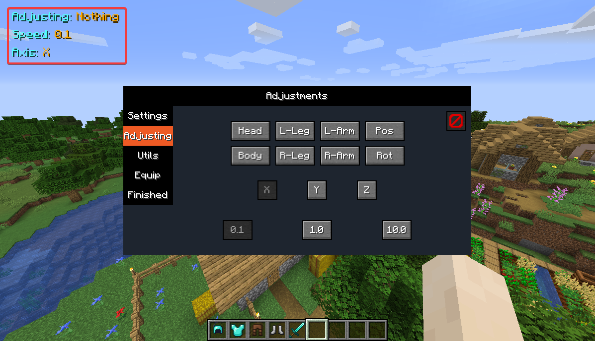
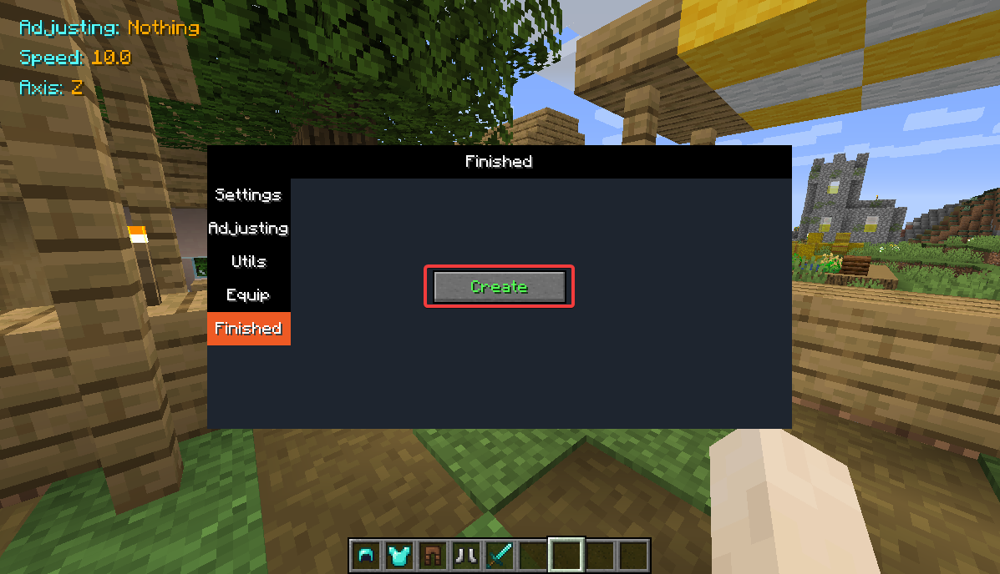
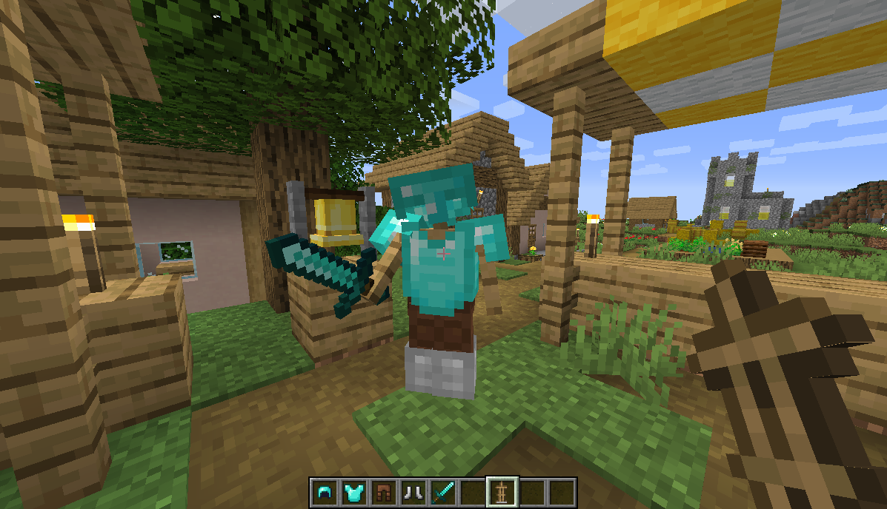

ASEdit - ArmorstandEditor
| Requirements | Description |
|---|---|
| Creative | The gamemode must be creative |
| Build rights | The user must be able to build in the world |
How to use
Activate the Module ASEdit in the section Special.
You'll notice that your screen changes directly.
First you can see the new information for the module.
The armorstand you can see here is only visable to you.
Also no other player can interact with it.
You can equip it a bit different but somewhat similar like a normal armorstand.
When you press the F key, you can see that a gui opens.
Here you can edit your armorstand's property's and also set a name.
On the left you can see different tabs to edit your armorstand.
The Adjustig tab is one of the most important tabs.
The settings you set are reflected by the information displayed, when you are outside the gui.
You can select a part of the armorstand, the axis and the speed you want to modify it with.
When you now scroll like usualy to switch a slot, you are adjusting the armorstand's part.
When you are finished with the armorstand, go to the Finished section and click on Create.
The Mod will now give you an armorstand that you have to place somewhere in the same world.
Now the actual armorstand got created and all other players will be able to see it.
